Cách đổi tên Facebook trên điện thoại/máy tính cực đơn giản

Ty Nguyen
CEO ❤️ AhaChat. Love babies & chatbot.
Mạng xã hội Facebook chắc hẳn không còn lạ lẫm với đại đa số người dùng trên thế giới. Tuy nhiên, không phải ai cũng có thể biết cách sử dụng các tính năng cũng như cách đổi tên Facebook cá nhân,... Nếu bạn cũng đang thắc mắc về cách đổi tên Facebook thì đừng bỏ qua bài viết dưới đây nhé.
1. Hướng dẫn cách đổi tên Facebook trên máy tính
Bạn muốn đổi tên tài khoản Facebook cá nhân của bạn ở trên máy tính thì làm theo các bước hướng dẫn sau:
Bước 1: Bạn truy cập vào website facebook.com, đăng nhập vào tài khoản Facebook cá nhân muốn đổi tên. Click chuột vào biểu tượng Tam giác ngược ở góc phải màn hình rồi chọn mục Cài đặt & quyền riêng tư
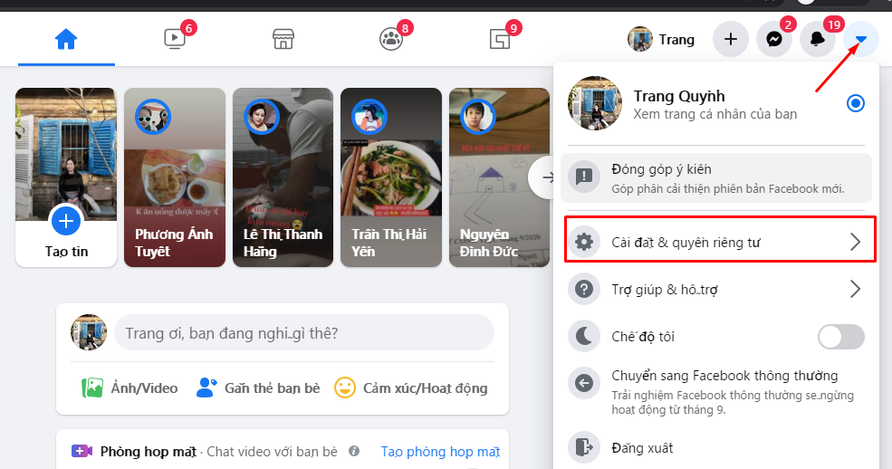
Bước 2: Tiếp theo, bạn chọn mục Cài đặt
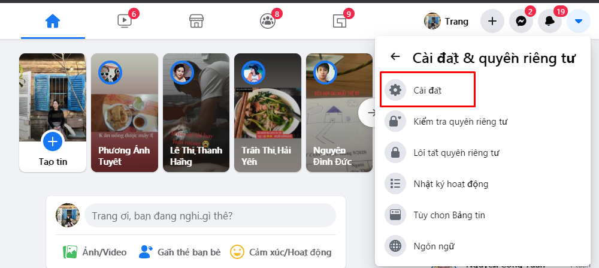
Bước 3: Tại cửa sổ giao diện mục Cài đặt, bạn chọn mục Chung sau đó tại mục Tên bạn click chuột vào Chỉnh sửa
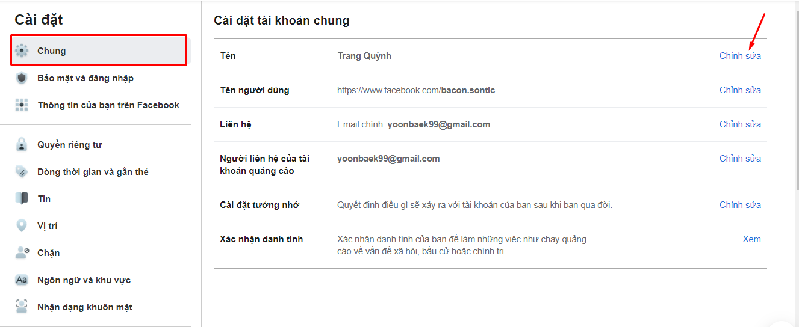
Bước 4: Lúc này xuất hiện giao diện để bạn đổi tên. Bạn thay đổi tên mới mà bạn muốn đặt, sau đó ấn Xem lại thay đổi.
Tại đây có một lưu ý cho bạn đó là, nếu bạn muốn đổi tên Facebook mới thì sau khi đã thay đổi, trong vòng 60 ngày bạn sẽ không thể đổi lại tên. Trường hợp nếu bạn muốn đổi lại tên Facebook khi chưa đủ 60 ngày thì đừng bỏ dở bài viết, mà hãy theo dõi đến cuối cùng để biết cách đổi tên Facebook chưa đủ 60 ngày nhé.
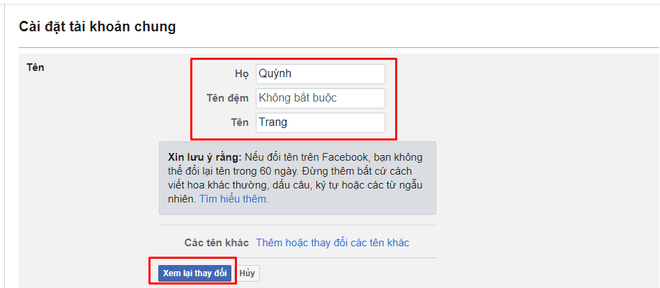
Bước 5: Sau khi ấn vào Xem lại thay đổi, bạn chọn vào cái tên mà bạn muốn đổi sẽ xuất hiện như nào trên Facebook. Tiếp theo, bạn nhập mật khẩu rồi bấm vào Lưu thay đổi.
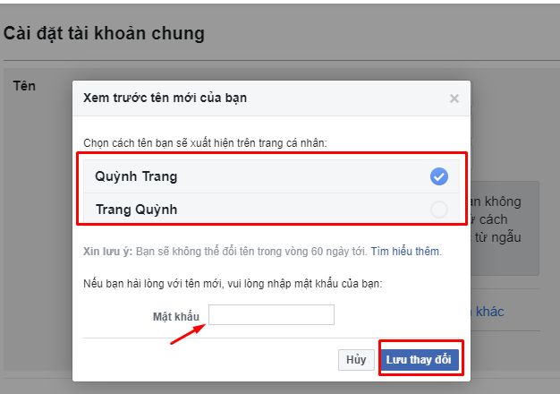
Như vậy là với những thao tác cơ bản, bạn đã đổi tên Facebook thành công trên máy tính rồi nhé.
2. Cách đổi tên Facebook trên điện thoại (iphone, ipad … Android/iOS/Windows Phone...)
Với trường hợp bạn chỉ có điện thoại và dùng Facebook thông qua ứng dụng trên điện thoại di động. Lúc này nếu muốn đổi tên Facebook, bạn chỉ có cách đổi tên Facebook trên điện thoại. Cách thực hiện đổi tên Facebook trên điện thoại như sau:
- Bước 1: Bạn đăng nhập Facebook từ ứng dụng trên điện thoại. Ứng dụng Facebook có biểu tượng chữ “f” màu trắng nền xanh.
Bước 2: Sau khi đăng nhập vào tài khoản cá nhân của bạn, tại giao diện trang chủ, bạn bấm chọn biểu tượng 3 gạch ngang ở góc phải phía dưới màn hình. Rồi chọn mục Cài đặt & quyền riêng tư.
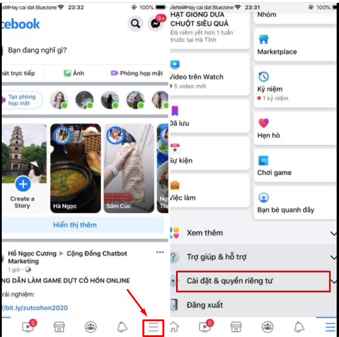
Bước 3: Tiếp theo, bạn chọn mục Cài đặt.
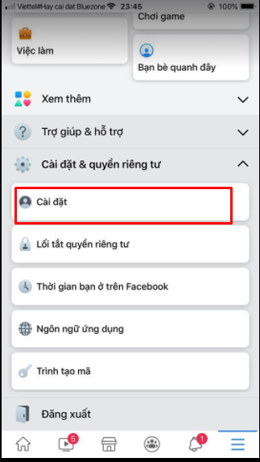
Bước 4: Tại giao diện mục Cài đặt, bạn bấm vào phần Thông tin cá nhân để đổi tên. Tại giao diện thông tin cá nhân, bạn chọn Tên ở mục Chung.
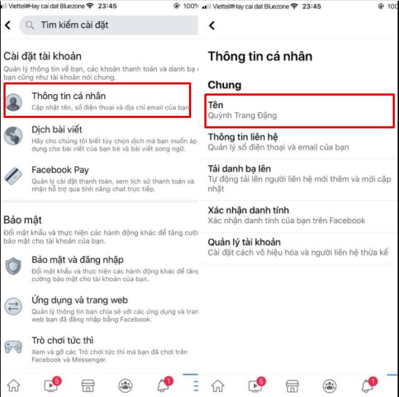
Bước 5: Thay đổi tên Facebook
Sau khi bạn bấm vào mục Tên, giao diện thay đổi thông tin tên xuất hiện. Tại đây, bạn nhập tên Facebook muốn thay mới vào rồi bấm chọn Xem lại thay đổi.
Tiếp đến, bạn tích chọn vào cách hiển thị của tên bản mới tạo mà Facebook đưa ra. Cuối cùng, bạn ấn vào Lưu thay đổi.
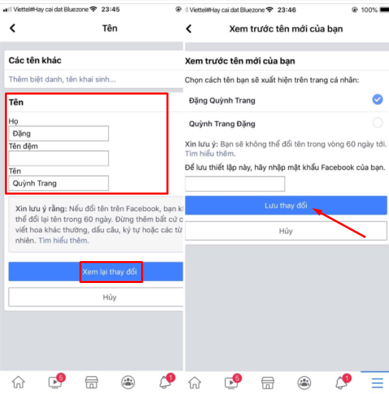
Với các bước cơ bản trên là bạn đã đổi tên Facebook thành công trên ứng dụng điện thoại.
3. Cách đổi tên Facebook chưa đủ 60 ngày
Có một số trường hợp khi đã đổi tên Facebook nhưng chưa đủ 60 ngày đã muốn thay tên Facebook mới. Để có thể đổi tên Facebook khi chưa đủ 60 ngày, bạn có thể gửi ảnh CMND cho phía Facebook để xác nhận. Cách thực hiện như sau:
Bước 1: Bạn truy cập vào trang trợ giúp của Facebook theo đường link sau:
Bước 2: Điền đầy đủ thông tin tên bạn muốn đổi.
Lưu ý khi bạn đổi tên thì tên bạn đổi phải trùng khớp với tên trên giấy CMND hoặc giấy phép lái xe mà bạn dùng để gửi ảnh cho phía Facebook.
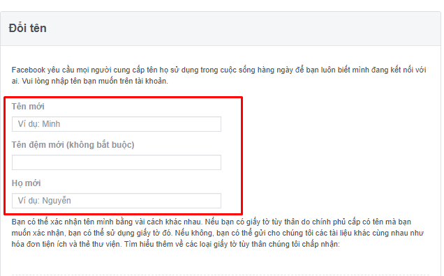Bước 3: Sau khi đã nhập tên thay đổi, bạn kéo xuống dưới để điền lý do và up kèm ảnh mặt trước của CMND hoặc giấy phép lái xe. Khi đã cung cấp đầy đủ các thông tin, bạn click chuột vào nút Gửi.
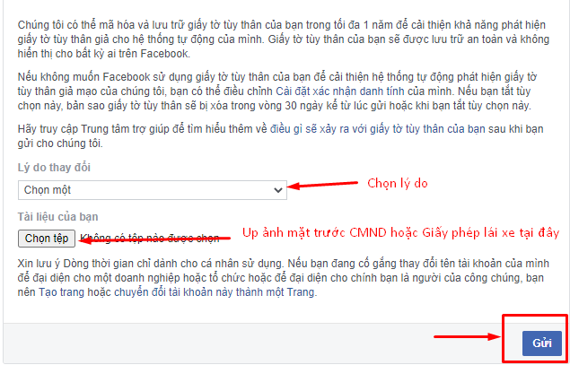
Như vậy là bạn đã hoàn thành các bước đổi tên Facebook khi chưa đủ 60 ngày. Giờ bạn cần chờ phía Facebook xét duyệt yêu cầu đổi tên của bạn có thành công không nhé.
Bài viết trên đây đã hướng dẫn bạn cách đổi tên Facebook trên máy tính và điện thoại di động. Hy vọng với những thông tin đó hữu ích đối với bạn. Nếu bạn có bất kỳ thắc mắc hay góp ý gì thì đừng quên để lại câu hỏi ngay mục bình luận dưới đây, chúng tôi sẽ phản hồi bạn trong thời gian sớm nhất. Chúc bạn thực hiện thành công!